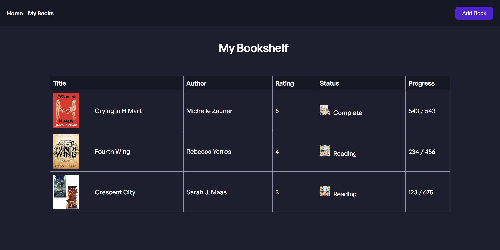

BookTracker is a web based book tracking application that helps users organize their reading habits by managing their reading lists and tracking progress. It was designed for avid readers who want to keep track of books they are reading, have read, or plan to read.
- Search and add books using the OpenLibrary API.
- Track reading progress with visual indicators.
- Sort and filter books by title, author, rating, or status.
- Mark books as read, currently reading, or want to read.
- Frontend: HTML, CSS, JavaScript
- Backend: Python, Flask
- Database: SQLite
- API Integration: Open Library API
- Integreate the New York times API user authentication for secure login and registration.
- Allow users to create custom reading lists and share with others.
- Integrate Goodreads API for more book information and reviews.